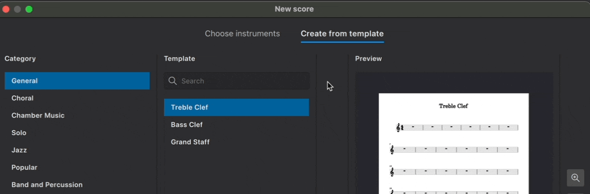
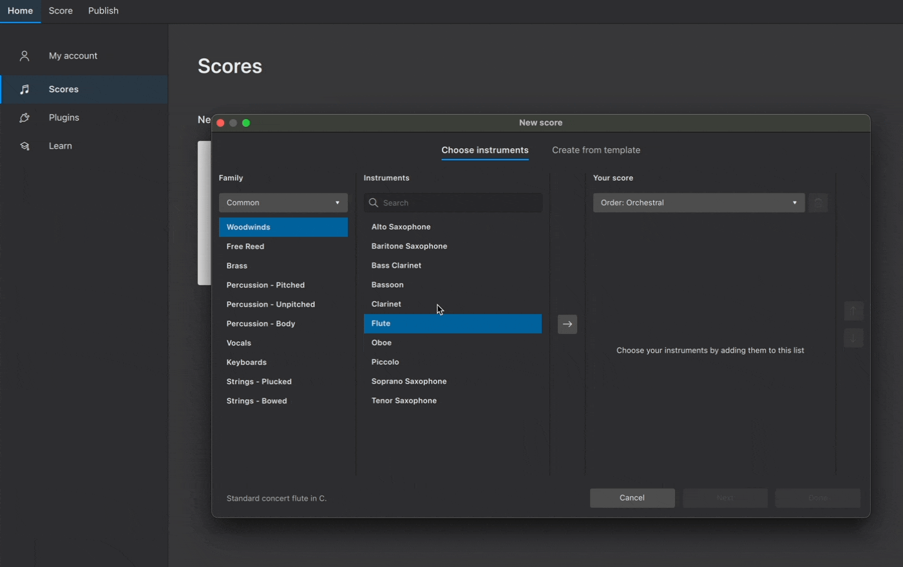
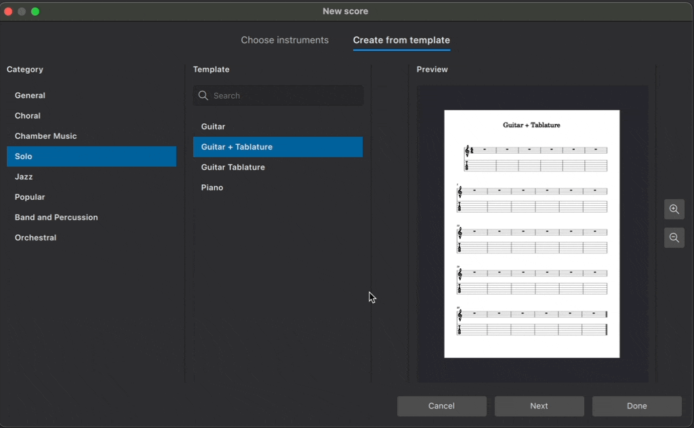

新建乐谱
概述
要新建一份乐谱，可以使用以下任一方式：
- 在 主页→乐谱 标签页中，选择 新建乐谱，或单击右下角的 新建 按钮
- 从菜单中选择 文件→新建
- 使用快捷键 Ctrl+N（Mac：Cmd+N）

这将打开 新建乐谱 对话框（关于该对话框的更多说明见下文）。完成乐谱设置后，它就会出现在 乐谱 标签页中。
乐器
新建乐谱时，你可以自己选择乐器，也可以使用已预先配置好合适乐器的模板（这些之后都可以随时修改）。
选择乐器
在 新建乐谱 对话框中，确保已选中 选择乐器 标签页。

MuseScore 包含 500 多种乐器。乐器按类别分组，类别又归属于不同的乐器族。如果你知道要找什么，可以直接在搜索框中输入乐器名称；也可以从 乐器族 下拉菜单中按组浏览乐器。
添加乐器
要向乐谱中添加乐器：
- 双击乐器名称，或
- 单击乐器名称将其选中，再单击 → 按钮

乐器会自动按照 您的乐谱 下拉菜单中显示的顺序排列。你可以从该菜单中选择一系列标准乐谱配置。
调整乐器顺序
要手动调整乐器顺序：
- 在 您的乐谱 面板中选中一个乐器
- 单击 ↑ 或 ↓ 来改变其位置

删除乐器
要从乐谱中删除一个乐器：
- 在 您的乐谱 面板中选中一个乐器
- 单击垃圾桶按钮

你也可以先按住 Shift 选中多个乐器，再单击垃圾桶按钮，一次性删除多个乐器。
从模板创建
乐谱也可以从预先配置好的模板创建。
模板按音乐风格或合奏配置分门别类。每个模板都包含某类乐谱最常用的乐器，乐器按常规习惯排列并设置样式。
要从模板创建乐谱：
- 单击 从模板创建
- 从 类别 面板中选择一组模板
- 在中间面板中选择你想要的模板
- 单击 完成

你也可以在搜索栏中搜索所有可用的模板。
访问 模板与样式 了解更多模板信息，包括如何创建自己的模板以供日后使用。
乐谱附加信息
在 新建乐谱 对话框中单击 下一步，可以指定乐谱的附加信息。

调号
默认情况下，新建的乐谱调号不含升号或降号（C 大调）。要指定不同的调号，请单击 调号 下方的按钮。大调优先显示；选择 小调 标签页可以显示小调。
拍号
新建乐谱默认使用 4/4 拍。单击 拍号 下方的按钮可以修改。使用微调框中的箭头调整每小节的拍数，并从下拉菜单中修改拍子单位。你还可以在此弹出窗口中选择普通拍号和二二拍（alla breve）。
速度
默认情况下，新乐谱将以四分音符 = 每分钟 120 拍（bpm）的速度播放。新建乐谱不会自动包含节拍器标记。
要自定义初始播放速度，并在最上方谱表上方显示节拍器标记：
- 单击 速度 下方的按钮
- 勾选 在我的乐谱上显示速度标记
- 选择所需的拍值
- 在文本框中输入所需的每分钟拍数（或使用上下箭头滚动浏览速度范围）
在 速度标记 中了解更多关于速度文字、节拍器标记和播放速度的信息。
小节
新建乐谱默认包含 32 个小节，且没有弱起小节。要修改新乐谱的初始小节数：
- 单击 小节 下方的按钮
- 在 初始小节数 字段中输入所需的小节数
乐谱创建后，随时可以在 添加与删除小节 中了解更多。
要让乐谱以弱起小节开始：
- 单击 小节 下方的按钮
- 勾选 创建弱起小节
- 在文本框中输入弱起小节所需的拍数
- 从下拉菜单中选择弱起小节的节拍值